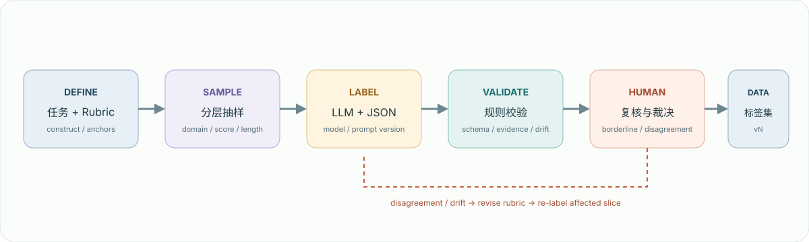
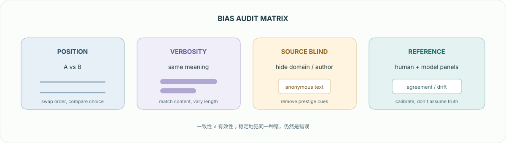

MODULE 12 / LLM DATA ENGINEERING
LLM 辅助数据标注
构建可复现的 LLM 标注协议：Rubric、结构化输出、一致性、偏差审计、不确定性路由与蒸馏。
当语料规模达到数十亿文档时，人工逐条标注不可行；但把 LLM 的分数直接当作真值也不可靠。工程目标不是“让模型代替人”，而是建立一个可复现、可审计、能把不确定样本送回人工的测量协议。
标注是一条测量流水线，不是一句 Prompt

推荐将每个标注任务拆成六个可版本化对象：构念定义、评分 Rubric、样本抽样策略、Prompt 模板、裁判模型配置、人工裁决规则。任何一个对象发生变化，都应提升标注版本，而不是把新旧标签混在同一列里。
先写 Rubric：让评分锚点可操作
以教育价值为例，评分应关注文本是否真正解释了概念、提供步骤或推理、组织知识关系，以及读者能否据此学习。不要把“文风正式”“篇幅长”“来源有名”偷偷混进教育价值的定义。
| 分数 | 操作性锚点 | 标注者需要寻找的证据 |
|---|---|---|
| 0 | 没有可学习内容 | 广告、导航、关键词堆砌、空页面 |
| 1 | 极少信息，缺少解释 | 孤立事实、重复句、无上下文列表 |
| 2 | 提供基础信息，但教学结构弱 | 定义或步骤不完整、关键假设缺失 |
| 3 | 能帮助读者理解一个明确主题 | 解释、例子、结构或推理至少形成闭环 |
| 4 | 系统、准确且有较强教学价值 | 概念关系、步骤、边界条件和例子充分 |
| 5 | 高度完整，可作为深入学习材料 | 严谨推导、可复现方法、例外与延伸 |
锚点应由领域专家和目标用户共同校准。FineWeb-Edu 的评分聚焦基础教育知识；如果任务转为研究生论文、医学知识或代码教程，应重新定义 Rubric，而不是沿用原量表。
Prompt：把输入、判定依据和输出契约分开
SYSTEM:
You are an annotation worker. Follow the rubric exactly.
Judge only the educational value evidenced in the supplied text.
Do not infer quality from author identity, domain reputation, or length alone.
If the text is insufficient, return "abstain".
USER:
Task: score educational value from 0 to 5.
Rubric version: edu-rubric-v1.2
Return:
- score: integer 0..5 or null
- evidence_spans: up to 3 short verbatim spans
- uncertainty: low | medium | high
- abstain_reason: string or null
Document:
<document> ... </document>把原文放在明确的数据边界内，并将其视为不可信输入：文档中的指令不能覆盖系统任务。模型解释只需给出可核验的证据片段和简短理由，不需要冗长的隐藏推理过程。
如何测量一致性：不要只看 exact match
对于两个标注者的分类结果，Cohen’s κ 会扣除偶然一致率；有序分数可使用 weighted κ。多标注者或存在缺失值时，可考虑 Krippendorff’s α；连续评分则需要根据实验设计选择 ICC 等指标。指标选择取决于量表和标注结构，不是越复杂越好。
建议同时报告：人–人基线、人–LLM 一致性、各类别混淆矩阵、分层结果、重测稳定性，以及人工裁决比例。总体 agreement 可能被占比最大的类别主导；必须查看少数类和边界分数。2026 年 AACL 的一项系统调查分析了 665 篇 NLP 论文，发现 Cohen’s κ 经常被不区分任务类型地使用，而连续评分任务更适合考虑 ICC；报告一致性指标时必须先判断量表类型。
LLM 裁判会有哪些偏差？

MT-Bench / Chatbot Arena 的 LLM-as-a-Judge 研究指出，LLM 裁判可能受到位置、冗长度和自我偏好等偏差影响。对于 pairwise 标注，随机交换 A/B 顺序并比较选择是否翻转；对于单文档评分，隐藏域名、作者和来源声誉，避免模型凭外部线索打分。
FineWeb-Edu 的公开说明也提供一个重要反例：不同教师模型的评分分布可能有系统性偏移。Mixtral 8×7B 更容易给高分；把多个模型分数简单平均会把整体分布向右推。作者报告，基于 jury 标签训练的分类器在他们的实验中反而不如基于 Llama 3 标签的分类器。因此，“多模型投票”不是自动去偏的魔法。
不确定性路由：把人工预算花在最有价值的地方
对分数边界附近、模型间分歧大、来源分布变化或证据不足的样本，应提高人工复核优先级。若模型返回类别概率向量，可计算熵作为一个路由信号；但模型自报的概率不是天然校准的置信度，必须用人工留出集验证。
下面的不确定性值是合成示例，不是任何模型的真实校准结果。
从教师标注到学生模型：蒸馏的是协议，不是客观真理
当标注协议稳定后，可用 LLM 标注的代表性样本训练小模型，把高成本判断扩展到全量语料。抽样时不能只取明显的 0 分和 5 分；要覆盖中间分数、不同语言、主题、长度、来源和边界案例，否则学生模型会在真实部署最常遇到的区域失准。
# conceptual pseudocode: preserve teacher provenance
for document in stratified_sample:
label = teacher.annotate(document, rubric_version="edu-v1.2")
validate_schema(label)
validate_evidence_spans(document.text, label.evidence_spans)
if label.abstain or label.uncertainty == "high":
send_to_human_queue(document, label)
else:
write_versioned_label(document.id, label, teacher_revision, prompt_hash)
student.fit(texts, labels, sample_weight=confidence_weights)
# evaluate against an independent, human-adjudicated holdout set参考资料
- HuggingFaceFW, FineWeb-Edu Dataset Card，Annotation 与 model jury ablation。
- Zheng et al. (2023), Judging LLM-as-a-Judge with MT-Bench and Chatbot Arena，position、verbosity 与 self-enhancement bias。
- Al-Khalifa (2026), Twenty-Five Years of Inter-Annotator Agreement in NLP: A Systematic Survey of Trends, Metrics, and Reporting Practices，AACL-IJCNLP 2026。
- Artstein & Poesio (2008), Inter-Coder Agreement for Computational Linguistics，一致性指标综述。
- Twenty-Five Years of Inter-Annotator Agreement in NLP (2026)，指标选择与报告实践。